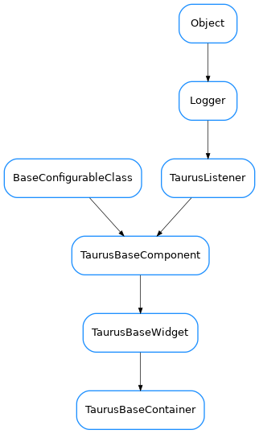

TaurusBaseContainer¶

-
class
TaurusBaseContainer(name='', parent=None, designMode=False)[source]¶ Bases:
taurus.qt.qtgui.base.taurusbase.TaurusBaseWidgetBase class for the Taurus container widgets. This type of taurus container classes are specially useful if you define a parent taurus model to them and set all contained taurus widgets to use parent model. Example:
from taurus.qt.qtgui.container import * from taurus.qt.qtgui.display import * widget = TaurusWidget() layout = Qt.QVBoxLayout() widget.setLayout(layout) widget.model = 'sys/database/2' stateWidget = TaurusLabel() layout.addWidget(stateWidget) stateWidget.model = 'sys/database/2/state'
-
getPendingOperations()[source]¶ Returns the sequence of pending operations
- Return type
sequence<TaurusOperation>- Returns
a list of pending operations
-
handleEvent(evt_src, evt_type, evt_value)[source]¶ very basic and generalistic handling of events.
Override when necessary.
-
hasPendingOperations()[source]¶ Returns if the component has pending operations
- Return type
- Returns
True if there are pending operations or False otherwise
-
isReadOnly()[source]¶ Determines if this component is read-only or not in the sense that the user can interact with it. Default implementation returns True.
Override when necessary.
- Return type
- Returns
whether or not this component is read-only
-